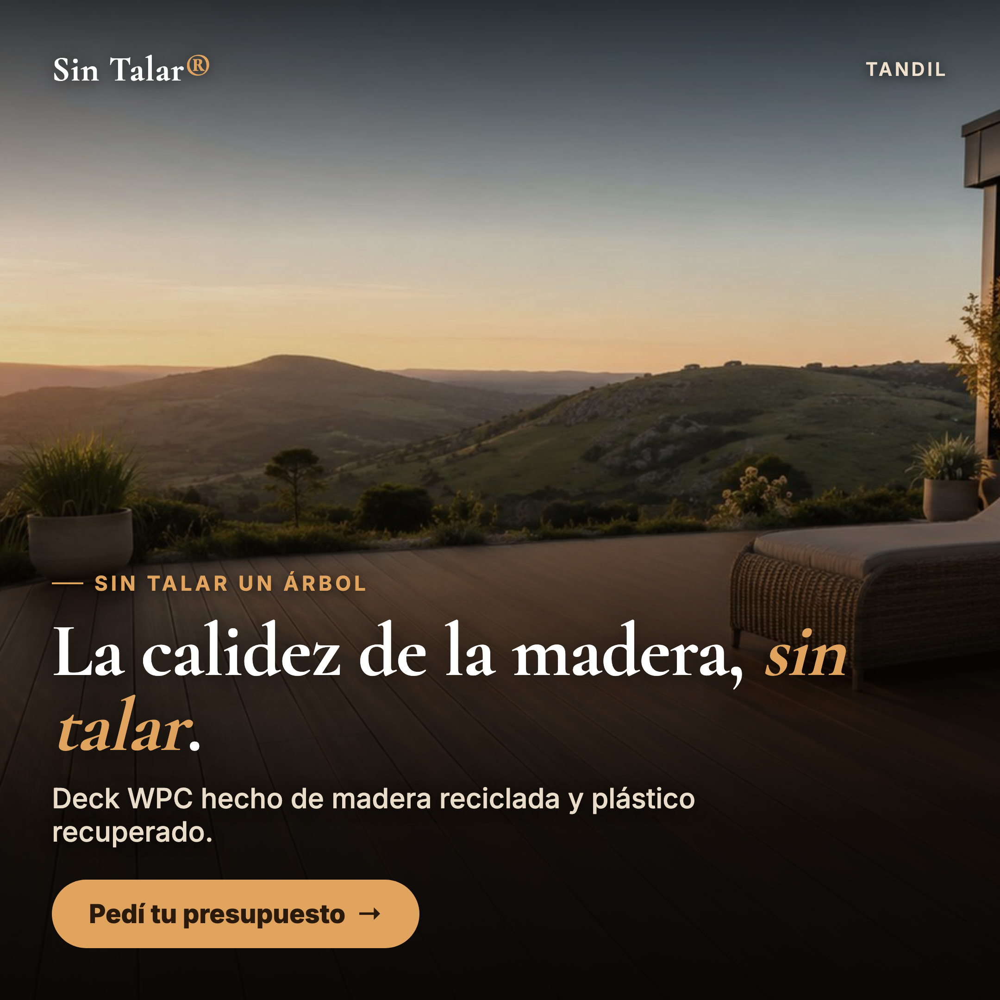
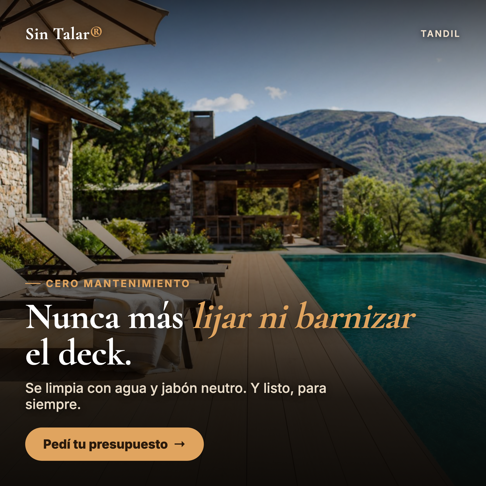
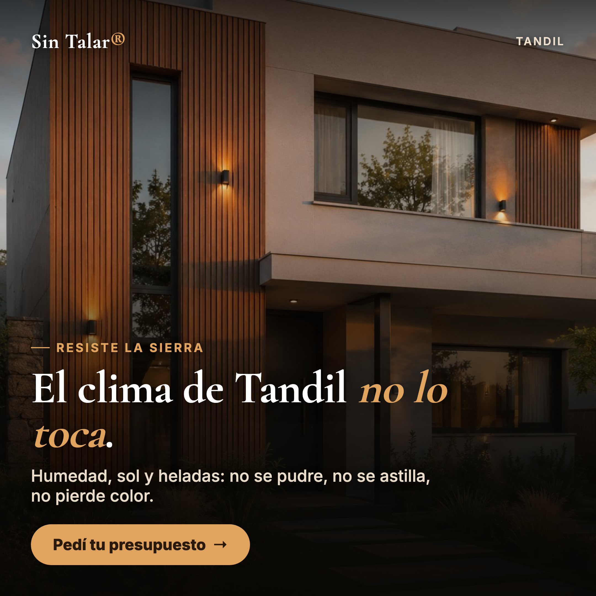
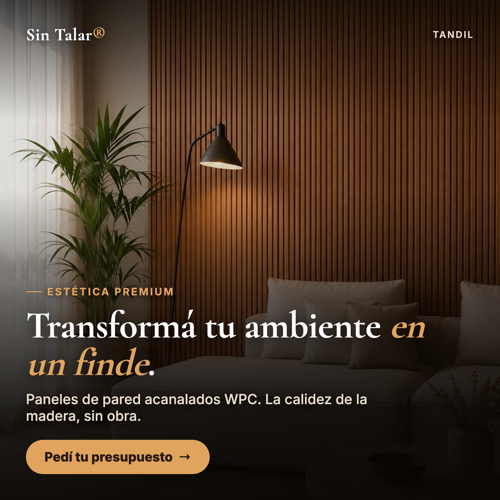

Piezas de marketing para deck y revestimientos WPC en Tandil — video, reel y placas para redes. Producidas para la marca.
Videos con IA (Google Veo) + branding propio. Silenciados: se les agrega música al publicar.




El destino de los anuncios: sitio completo con producto, comparativa y contacto.
Ver la landing →